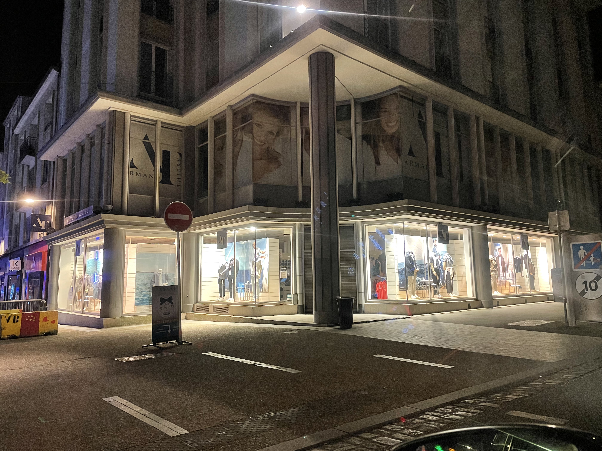

Texte explicatif de notre projet

Texte du décret national
... et souhaitez connaitre les économies que vous pourriez faire par an en respactant à la lettre les horaires autorisés pour l'éclairage de vos vitrines ?
Faire le calculOn ne peut pas vous forcer à éteindre tous les éclairages de vos vitrines (même si on vous encourage fortement à le faire. Nous pouvons cependant vous conseiller d'investir dans des ampoules basse consommation !
Lors de notre projet, nous sommes entrés en relation avec la métropole de Brest, que notre projet interessait. En effet, la métropole a pour projet de modifier les éclairages public
de la ville afin d'harmoniser les espaces publics urbains, dans un souci d'environnement et de consommation.
Les recensements que nous avons ainsi effectués afin de mieux cibler notre action, serviront aussi au projet de la mairie !
Ce projet n'aurait pas été possible sans différents acteurs externes à notre groupe de projet IHH, c'est pourquoi nous remercions :